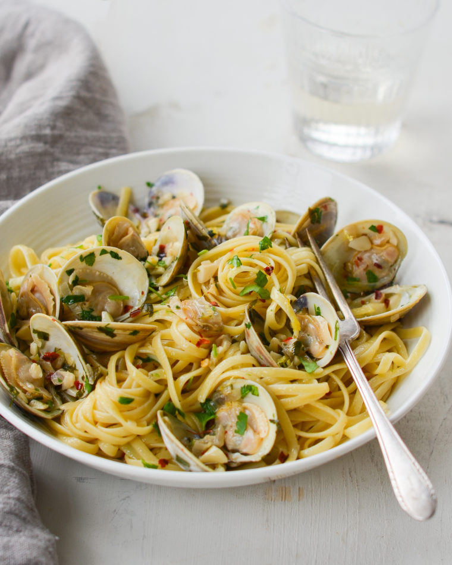

Linguine with Clams
Linguinie with clams in a garlicky white wine sauce makes an easy and elegant Italian pasta
1 pound Linguine
6 tablespoons extra-virgin olive oil
1/2 cup finely chopped shallots, from 2 shallots
6 cloves garlic, coarsely chopped
1 cup dry white wine, such as Pinot Grigio, CHardonnay or Sauvignon Blanc
1/2 teaspoon red pepper flakes
2 pounds Littleneck clams, scrubbed
1/4 cup plus 2 tablespoons fresh flat-leaf parsley, finely chopped
3 tablesppons unsalted butter
1 tablesppon lemon juice, from 1 lemon, plus more to taste
Steps
- In large pot over high heat, bring 4 quarts of water and 2 tablespoons of kosher salt to a boil. Add the linguine and cook according to the package directions until just shy of al dente (the pasta should still be firm to the bite since it will cook another minute or two in the sauce).
- Meanwhile, in a very large sauté pan over medium-high heat, heat the olive oil until hot but not smoking. Add the shallots and garlic and sauté until just golden, about 30 seconds. Add the wine, red pepper flakes, 3/4 teaspoon kosher salt, clams, and 1/4 cup of the parsley; bring to a simmer and cook, covered, until the clams open, 6 to 8 minutes. Discard any unopened clams.
- Reserving 1/2 cup of the cooking water, drain the linguine in a colander (do not rinse). Add the pasta to the sauté pan with the clams. (If you don't have room for everything in one pan, transfer the clams to a plate and cover to keep warm. When ready to serve, add them back to the pasta on a serving platter). Increase the heat to medium and cook the linguini with the clams, tossing occasionally, until the pasta absorbs most of the sauce and is just tender, 1 to 2 minutes. If necessary, add some of reserved cooking water to keep moist. Remove the pan from the heat. Add the butter, lemon zest, lemon juice, and the remaining 2 tablespoons of parsley; toss to coat. Taste and adjust the seasoning with more salt, lemon zest and/or lemon juice, if necessary. Transfer to a serving dish or bowls and serve.